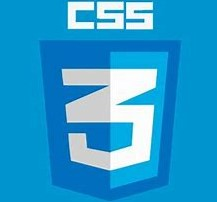

01 de febrero del 2023

El día de hoy trabajamos con HTML5, tanto en su concepto como en la práctica, para el concepto primero investigamos que era, algunas de sus caracteristicas en comparación con la versión anterior y masomenos como se utiliza, además de la explicación dada por el profesor y para la practica, utilizamos el bloc de notas para hacer una página web con algunos tipos de etiquetas.
02 de febrero del 2023

El día de hoy trabajamos con Github, el profesor nos explicó como funciona Github para el desarrollo de sistemas y nos dijo como subiríamos las versiones de nuestra bitacora al actualizarla con cada día de clases.
ya que solo pudimos trabajar con el github personal, y estamos en espera de las
instrucciones.
08 de febrero del 2023

El día de hoy al tener en cuenta que el internet no funcionaba de la mejor manera y después no funcionara en lo absoluto, el profesor optó por darnos clase en el pizarrón, nos habló sobre las "divisiones" en las páginas web y como es que estan disponibles aun que no nos demos cuenta, además de que nos comentó algunas cosas sobre CSS el cual nos servirá para darle un mejor aspecto a nuestra página web. Después de darnos la información, el profesor nos indicó que trataramos de darle una buena presentación a nuestra página sin usar CSS y utilizando solamente HTML, con lo cual estamos trabajando actualmente.
09 de febrero del 2023
El día de hoy tuvimos una clase mas amplia sobre CSS e hicimos algunas practicas utilizando nuestra bitacora como base en HTML y al final comenzamos a trabajar bien sobre la bitacora con CSS para darle una mejor forma y es el trabajo en el cual trabajamos actualmente.

13 de febrero del 2023
El día de hoy continuamos trabajando con la bitacora y el diseño de ella, a demas de que se nos habló sobre el diseño y como podemos saturar al usuario al mostrar tanto contenido o contenido mal organizado, además de colores que no son llamativos.

15 de febrero del 2023
El día de hoy el profesor dijo a algunos alunmos que presentaran sus trabajos en la videollamada y nos dio detalles que podiamos mejorar y algunas sugerencias, a mi me dijo que podía cambiar algunos colores y destacar más algunas cosas que podrían pasar desapercibidas por el usuario al momento de utilizar la página, por lo cual yo me puse a trabajar en eso tomando como referencia algunas páginas que me parecieron agradables.

16 de febrero del 2023
El día de hoy investigamos como ha evolucionado el desarrollo web y de lo que nos dimos cuenta en gran parte fue que el diseño a dado un salto muy grande, apostando por algo más minimalista e intuitivo al contrario de las páginas antiguas que solían mostrar colores muy brillantes y que podían dañar la presentación.
20 de febrero del 2023
El día de hoy el profesor nos indicó que comenzaramaos a trabajar en el login y la página de registro para una página web. Durante la clase todos trabajamos en el desarrollo de nuestra página con HTML y CSS, en mi caso, yo utilicé color negro como fondo del formulario y un gris claro para el fondo de la página, además de algunos detalles en color morado.
22 de febrero del 2023
El día de hoy trabajamos en el desarrollo de una página de registro en la que se incluirán varios campos para el usuarion. El profesor nos indicó que debíamos añadir un espacio para que el usuario seleccione su Estado y su municipio
23 de febrero del 2023
El día de hoy reflexionamos sobre el impacto que tendría el proyecto que pensamos llevar a cabo y pensamos en los posibles problemas que no habíamos contemplado o tomado muy en cuenta, después de eso, el profesor nos dijo que elaboraramos un documento de word en el que plantearamos una solución a algun problema con lo que solucionaría y lo que podría impedir su funcionamiento.
27 de febrero del 2023
El día de hoy el profesor habló con nosotros y dimos un repaso de lo que habíamos visto en su clase, ya que será lo que encontraremos en el examen del primer parcial, luego de eso nos dijo que trabajaramos en la pagina de inicio para la cafetería, en la cual se incluirá un menú con los productos disponibles, un botón hacía la pagina de login y otro hacía la página de registro, y para esto nos comento que los colores y diseño en general de todo debe ser uniforme.
01 de Marzo del 2023
El día de hoy el profesor dijo que debíamos subir a GitHub la bitacora y el proyecto que había solicitado para la cafetería ya que pronto sería el examen.
02 de Marzo del 2023
El día de hoy realizamos el examen, el profesor nos dió la hora de la clase para terminarlo y conforme acababamos nos decía que nos fueramos al salón.